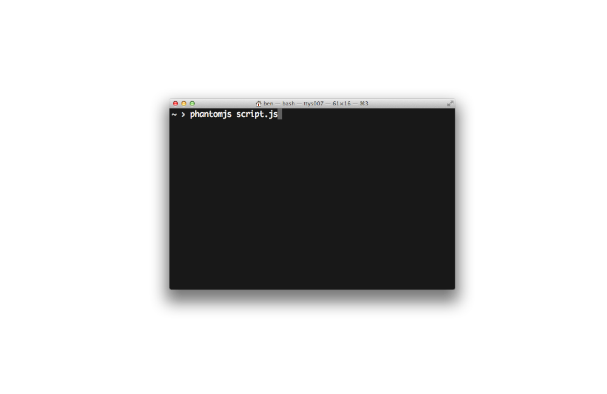

serving websites
to websites
with PhantomJS

var server = require('webserver').create();
server.listen(8080, function(request, response) {
var page = new WebPage();
page.open('https://m.lanyrd.com/2013/ogn32/attendees/', function (status) {
var attendees = page.evaluate(function(){
return $('a[href^="/profile"] .title').map(function(){
var name = $(this).text().trim(),
bio = $(this).next().text().trim();
return name + ' - ' + bio;
});
});
response.statusCode = 200;
response.write('* ' + attendees.join('\n* '));
response.close();
page.close();
});
});


var links = page.evaluate(function () {
return [].reduce.call(document.querySelectorAll('a'), function(memo, a){
var bb = a.getBoundingClientRect(),
area = bb.width * bb.height,
href = a.href
if(area)
memo[href] = (memo[href] || 0) + area;
return memo;
},{});
});
/*
{ http://www.torchbox.com/: 3360,
http://oxford.geeknights.net/: 89872,
http://bit.ly/Pesy75: 6460,
http://www.marianamota.com/: 4686,
http://benjaminbenben.com/: 4017…}
*/
var url = 'http://benjaminbenben.com';
$.getJSON('http://ogn32-link-areas.herokuapp.com',{url:url})
.then(function(links){
// DRAW GRAPHS!!!11!one!1!
})
mediaqueri.es

wtcss